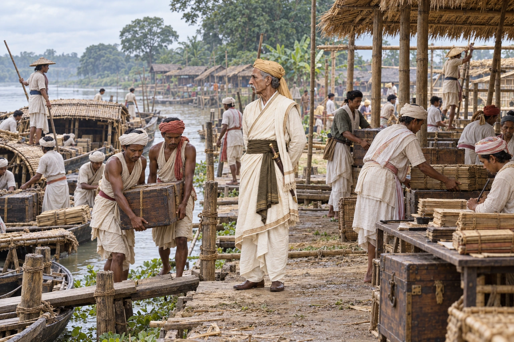

The Capital Moves from Rangpur to Jorhat
1794 · The Moamoria risings

With Rangpur wrecked by the rebellion, the Ahom court moves its capital to Jorhat, which stays the last capital of the kingdom.
Sources disagree on whether the move was completed before or after Gaurinath's death. Shows administrative relocation under Purnananda rather than a single authenticated royal arrival. Sources differ on the timing and Gaurinath chronology; he is not physically depicted.
Sources
People: Gaurinath Singha (Suhitpangphaa), Purnananda Burhagohain